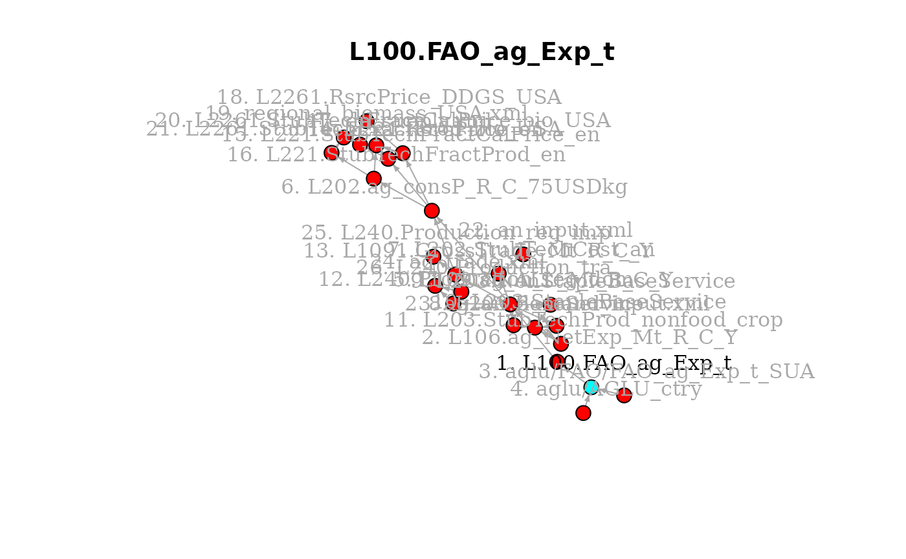

A tracing utility for the GCAM Data System.
dstrace(
object_name,
direction = "upstream",
graph = FALSE,
gcam_data_map = NULL,
previous_tracelist = NULL,
recurse = TRUE,
print = TRUE,
...
)Name of object to trace (can be either a data object or a code chunk)
Trace direction ("upstream", the default; "downstream"; or "both"), character
Plot a directed graph of relationships? Logical
A tibble of metadata information; normally a built-in package dataset
Information about previous objects printed
Recurse to print information about precursor objects? Logical
Print trace to console? Logical
Extra arguments passed on to dstrace_plot
A tibble with the trace information (object name and trace number), invisibly
What other data products feed into some particular data system object?
Conversely, to what other products does some object feed? These are the kinds
of questions that dstrace can help answer.
dstrace("L100.FAO_ag_Exp_t")
#> 1 - L100.FAO_ag_Exp_t - produced by module_aglu_LA100.FAO_downscale_ctry
#> FAO agricultural exports by country, item, year (t)
#> Downscale countries; calculate 5-yr averages
#> Precursor: aglu/FAO/FAO_ag_Exp_t_SUA (#2 below)
#> Precursor: aglu/AGLU_ctry (#3 below)
#> 2 - aglu/FAO/FAO_ag_Exp_t_SUA - read from file
#> FAO agricultural exports by country, item, year (tons)
#> Read from extdata/aglu/FAO/FAO_ag_Exp_t_SUA.csv
#> No precursors
#> 3 - aglu/AGLU_ctry - read from file
#> Mapping of countries in AGLU databases to ISO codes (NA)
#> Read from extdata/aglu/AGLU_ctry.csv
#> No precursors
dstrace("L100.FAO_ag_Exp_t", direction = "downstream")
#> 1 - L100.FAO_ag_Exp_t - produced by module_aglu_LA100.FAO_downscale_ctry
#> FAO agricultural exports by country, item, year (t)
#> Downscale countries; calculate 5-yr averages
#> Dependent: L106.ag_NetExp_Mt_R_C_Y (#2 below)
#> 2 - L106.ag_NetExp_Mt_R_C_Y - produced by module_aglu_LA106.ag_an_NetExp_FAO_R_C_Y
#> Net exports of primary agricultural goods by GCAM region / commodity / year (Mt)
#> Aggregate FAO primary agricultural goods gross exports and imports and
#> calculate net exports by GCAM region, commodity and year; Gross exports
#> are adjusted so that global net exports add to zero; Re-calculate
#> regional net exports using adjusted gross exports minus gross imports
#> Dependent: L109.ag_ALL_Mt_R_C_Y (#3 below)
#> 3 - L109.ag_ALL_Mt_R_C_Y - produced by module_aglu_LB109.ag_an_ALL_R_C_Y
#> Primary agricultural good mass balances, by region / commodity / year. (Mt)
#> Calculate primary agricultural good mass balances by GCAM region,
#> commodity and year; Adjusts global and regional net exports to remove
#> net negative other uses
#> Dependent: L202.ag_consP_R_C_75USDkg (#4 below)
#> Dependent: L202.StubTechCost_an (#5 below)
#> Dependent: L203.BaseService (#6 below)
#> Dependent: L203.NonStapleBaseService (#7 below)
#> Dependent: L203.StapleBaseService (#8 below)
#> Dependent: L203.StubTechProd_nonfood_crop (#9 below)
#> Dependent: L240.Production_reg_dom (#10 below)
#> Dependent: L1091.GrossTrade_Mt_R_C_Y (#11 below)
#> 4 - L202.ag_consP_R_C_75USDkg - produced by module_aglu_L202.an_input
#> Consumer costs of crops (1975$/kg)
#> Computed from weighted average of domestically sourced crops (which use
#> producer prices) and imports; Imported crop prices are computed from
#> weighted average of producer prices of exporting countries
#> Dependent: L221.RsrcPrice_en (#12 below)
#> Dependent: L221.StubTechFractCalPrice_en (#13 below)
#> Dependent: L221.StubTechFractProd_en (#14 below)
#> 12 - L221.RsrcPrice_en - produced by module_energy_L221.en_supply
#> Resource price for feedcrop secondary output (1975$)
#> A21.rsrc_info interpolated to all historical model time periods
#> Dependent: en_supply.xml (#15 below)
#> Dependent: L2261.RsrcPrice_DDGS_USA (#16 below)
#> 15 - en_supply.xml - produced by module_energy_batch_en_supply_xml
#> XML data structures to be parsed by GCAM
#> No dependents
#> 16 - L2261.RsrcPrice_DDGS_USA - produced by module_gcamusa_L2261.regional_biomass_USA
#> Depletable Resource Information for State-level Biomass Supply Sector Secondary Feed Outputs (1975$/kg)
#> Depletable resource prices for state-level DDGS & feedcake secondary
#> outputs
#> Dependent: regional_biomass_USA.xml (#17 below)
#> 17 - regional_biomass_USA.xml - produced by module_gcamusa_batch_regional_biomass_USA_xml
#> XML data structures to be parsed by GCAM
#> No dependents
#> 13 - L221.StubTechFractCalPrice_en - produced by module_energy_L221.en_supply
#> Calibrated prices of secondary outputs of feed from energy technologies (DDGS and feedcakes) (1975$/kg)
#> Value only relevant for share-weight calculation
#> Dependent: en_supply.xml (#15 above)
#> Dependent: L2261.StubTechFractCalPrice_bio_USA (#18 below)
#> 18 - L2261.StubTechFractCalPrice_bio_USA - produced by module_gcamusa_L2261.regional_biomass_USA
#> Calibrated historical price for DDGS (1975$/kg)
#> Value only relevant for share-weight calculation
#> Dependent: regional_biomass_USA.xml (#17 above)
#> 14 - L221.StubTechFractProd_en - produced by module_energy_L221.en_supply
#> Price and production fraction for secondary feed outputs (1975$, fraction)
#> Prices, production of feed output from L108.ag_Feed_Mt_R_C_Y and
#> L202.ag_consP_R_C_75USDkg
#> Dependent: en_supply.xml (#15 above)
#> Dependent: L2261.StubTechFractProd_bio_USA (#19 below)
#> 19 - L2261.StubTechFractProd_bio_USA - produced by module_gcamusa_L2261.regional_biomass_USA
#> Production Information for State-level Biomass Supply Sector Secondary Feed Outputs (1975$ (price); fraction)
#> Cost curve points (prices and production fraction) for producing
#> secondary output feedcrops; Secondary output (DDGS and feedcakes)
#> generated from corn and biomassOil only
#> Dependent: regional_biomass_USA.xml (#17 above)
#> 5 - L202.StubTechCost_an - read from file
#> Costs of animal production technologies (1975$/kg)
#> Animal feed cost, prices, and technology; This is the non-feed cost;
#> i.e., all costs of producing animal commodities except for the feed.
#> Dependent: an_input.xml (#20 below)
#> 20 - an_input.xml - produced by module_aglu_batch_an_input_xml
#> XML data structures to be parsed by GCAM
#> No dependents
#> 6 - L203.BaseService - produced by module_aglu_L203.ag_an_demand_input
#> Base service of final demands (Pcal/Mt/bm3)
#> Calculate the total final demands by supply sector in each region;
#> Remove any regions for which agriculture and land use are not modeled
#> Dependent: ag_an_demand_input.xml (#21 below)
#> 21 - ag_an_demand_input.xml - produced by module_aglu_batch_ag_an_demand_input_xml
#> XML data structures to be parsed by GCAM
#> No dependents
#> 7 - L203.NonStapleBaseService - produced by module_aglu_L203.ag_an_demand_input
#> Calibrated food demand quantities by year (non-staples) (PCal/yr)
#> FAO demand quantities multiplied by caloric content and added by demand
#> category
#> Dependent: ag_an_demand_input.xml (#21 above)
#> 8 - L203.StapleBaseService - produced by module_aglu_L203.ag_an_demand_input
#> Calibrated food demand quantities by year (staples) (PCal/yr)
#> FAO demand quantities multiplied by caloric content and added by demand
#> category
#> Dependent: ag_an_demand_input.xml (#21 above)
#> 9 - L203.StubTechProd_nonfood_crop - read from file
#> Crop non-food demand by technology and region (Mt)
#> Map in crop non-food demand in calibration years by region / commodity;
#> Remove any regions for which agriculture and land use are not modeled
#> Dependent: ag_an_demand_input.xml (#21 above)
#> 10 - L240.Production_reg_dom - read from file
#> Technology calibration for regional ag commodities: consumption of domestic production (Mt)
#> Consumption of commodities produced within-region
#> Dependent: ag_trade.xml (#22 below)
#> 22 - ag_trade.xml - produced by module_aglu_batch_ag_trade_xml
#> XML data structures to be parsed by GCAM
#> No dependents
#> 11 - L1091.GrossTrade_Mt_R_C_Y - produced by module_aglu_LB1091.ag_GrossTrade
#> Gross trade of primary agricultural products, by region / commodity / year. (Mt)
#> Determined from bi-lateral trade flows; only includes trade between
#> countries in different GCAM regions
#> Dependent: L202.ag_consP_R_C_75USDkg (#4 above)
#> Dependent: L202.StubTechCost_an (#5 above)
#> Dependent: L240.Production_reg_dom (#10 above)
#> Dependent: L240.Production_reg_imp (#23 below)
#> Dependent: L240.Production_tra (#24 below)
#> 23 - L240.Production_reg_imp - read from file
#> Technology calibration for regional ag commodities: imports (Mt)
#> Consumption of commodities that are traded between GCAM regions
#> Dependent: ag_trade.xml (#22 above)
#> 24 - L240.Production_tra - read from file
#> Technology calibration for traded ag commodities (Mt)
#> Regional exports of commodities that are traded between GCAM regions
#> Dependent: ag_trade.xml (#22 above)
dstrace("L100.FAO_ag_Exp_t", direction = "both", graph = TRUE)
#> 1 - L100.FAO_ag_Exp_t - produced by module_aglu_LA100.FAO_downscale_ctry
#> FAO agricultural exports by country, item, year (t)
#> Downscale countries; calculate 5-yr averages
#> Dependent: L106.ag_NetExp_Mt_R_C_Y (#2 below)
#> Precursor: aglu/FAO/FAO_ag_Exp_t_SUA (#3 below)
#> Precursor: aglu/AGLU_ctry (#4 below)
#> 2 - L106.ag_NetExp_Mt_R_C_Y - produced by module_aglu_LA106.ag_an_NetExp_FAO_R_C_Y
#> Net exports of primary agricultural goods by GCAM region / commodity / year (Mt)
#> Aggregate FAO primary agricultural goods gross exports and imports and
#> calculate net exports by GCAM region, commodity and year; Gross exports
#> are adjusted so that global net exports add to zero; Re-calculate
#> regional net exports using adjusted gross exports minus gross imports
#> Dependent: L109.ag_ALL_Mt_R_C_Y (#5 below)
#> 5 - L109.ag_ALL_Mt_R_C_Y - produced by module_aglu_LB109.ag_an_ALL_R_C_Y
#> Primary agricultural good mass balances, by region / commodity / year. (Mt)
#> Calculate primary agricultural good mass balances by GCAM region,
#> commodity and year; Adjusts global and regional net exports to remove
#> net negative other uses
#> Dependent: L202.ag_consP_R_C_75USDkg (#6 below)
#> Dependent: L202.StubTechCost_an (#7 below)
#> Dependent: L203.BaseService (#8 below)
#> Dependent: L203.NonStapleBaseService (#9 below)
#> Dependent: L203.StapleBaseService (#10 below)
#> Dependent: L203.StubTechProd_nonfood_crop (#11 below)
#> Dependent: L240.Production_reg_dom (#12 below)
#> Dependent: L1091.GrossTrade_Mt_R_C_Y (#13 below)
#> 6 - L202.ag_consP_R_C_75USDkg - produced by module_aglu_L202.an_input
#> Consumer costs of crops (1975$/kg)
#> Computed from weighted average of domestically sourced crops (which use
#> producer prices) and imports; Imported crop prices are computed from
#> weighted average of producer prices of exporting countries
#> Dependent: L221.RsrcPrice_en (#14 below)
#> Dependent: L221.StubTechFractCalPrice_en (#15 below)
#> Dependent: L221.StubTechFractProd_en (#16 below)
#> 14 - L221.RsrcPrice_en - produced by module_energy_L221.en_supply
#> Resource price for feedcrop secondary output (1975$)
#> A21.rsrc_info interpolated to all historical model time periods
#> Dependent: en_supply.xml (#17 below)
#> Dependent: L2261.RsrcPrice_DDGS_USA (#18 below)
#> 17 - en_supply.xml - produced by module_energy_batch_en_supply_xml
#> XML data structures to be parsed by GCAM
#> No dependents
#> 18 - L2261.RsrcPrice_DDGS_USA - produced by module_gcamusa_L2261.regional_biomass_USA
#> Depletable Resource Information for State-level Biomass Supply Sector Secondary Feed Outputs (1975$/kg)
#> Depletable resource prices for state-level DDGS & feedcake secondary
#> outputs
#> Dependent: regional_biomass_USA.xml (#19 below)
#> 19 - regional_biomass_USA.xml - produced by module_gcamusa_batch_regional_biomass_USA_xml
#> XML data structures to be parsed by GCAM
#> No dependents
#> 15 - L221.StubTechFractCalPrice_en - produced by module_energy_L221.en_supply
#> Calibrated prices of secondary outputs of feed from energy technologies (DDGS and feedcakes) (1975$/kg)
#> Value only relevant for share-weight calculation
#> Dependent: en_supply.xml (#17 above)
#> Dependent: L2261.StubTechFractCalPrice_bio_USA (#20 below)
#> 20 - L2261.StubTechFractCalPrice_bio_USA - produced by module_gcamusa_L2261.regional_biomass_USA
#> Calibrated historical price for DDGS (1975$/kg)
#> Value only relevant for share-weight calculation
#> Dependent: regional_biomass_USA.xml (#19 above)
#> 16 - L221.StubTechFractProd_en - produced by module_energy_L221.en_supply
#> Price and production fraction for secondary feed outputs (1975$, fraction)
#> Prices, production of feed output from L108.ag_Feed_Mt_R_C_Y and
#> L202.ag_consP_R_C_75USDkg
#> Dependent: en_supply.xml (#17 above)
#> Dependent: L2261.StubTechFractProd_bio_USA (#21 below)
#> 21 - L2261.StubTechFractProd_bio_USA - produced by module_gcamusa_L2261.regional_biomass_USA
#> Production Information for State-level Biomass Supply Sector Secondary Feed Outputs (1975$ (price); fraction)
#> Cost curve points (prices and production fraction) for producing
#> secondary output feedcrops; Secondary output (DDGS and feedcakes)
#> generated from corn and biomassOil only
#> Dependent: regional_biomass_USA.xml (#19 above)
#> 7 - L202.StubTechCost_an - read from file
#> Costs of animal production technologies (1975$/kg)
#> Animal feed cost, prices, and technology; This is the non-feed cost;
#> i.e., all costs of producing animal commodities except for the feed.
#> Dependent: an_input.xml (#22 below)
#> 22 - an_input.xml - produced by module_aglu_batch_an_input_xml
#> XML data structures to be parsed by GCAM
#> No dependents
#> 8 - L203.BaseService - produced by module_aglu_L203.ag_an_demand_input
#> Base service of final demands (Pcal/Mt/bm3)
#> Calculate the total final demands by supply sector in each region;
#> Remove any regions for which agriculture and land use are not modeled
#> Dependent: ag_an_demand_input.xml (#23 below)
#> 23 - ag_an_demand_input.xml - produced by module_aglu_batch_ag_an_demand_input_xml
#> XML data structures to be parsed by GCAM
#> No dependents
#> 9 - L203.NonStapleBaseService - produced by module_aglu_L203.ag_an_demand_input
#> Calibrated food demand quantities by year (non-staples) (PCal/yr)
#> FAO demand quantities multiplied by caloric content and added by demand
#> category
#> Dependent: ag_an_demand_input.xml (#23 above)
#> 10 - L203.StapleBaseService - produced by module_aglu_L203.ag_an_demand_input
#> Calibrated food demand quantities by year (staples) (PCal/yr)
#> FAO demand quantities multiplied by caloric content and added by demand
#> category
#> Dependent: ag_an_demand_input.xml (#23 above)
#> 11 - L203.StubTechProd_nonfood_crop - read from file
#> Crop non-food demand by technology and region (Mt)
#> Map in crop non-food demand in calibration years by region / commodity;
#> Remove any regions for which agriculture and land use are not modeled
#> Dependent: ag_an_demand_input.xml (#23 above)
#> 12 - L240.Production_reg_dom - read from file
#> Technology calibration for regional ag commodities: consumption of domestic production (Mt)
#> Consumption of commodities produced within-region
#> Dependent: ag_trade.xml (#24 below)
#> 24 - ag_trade.xml - produced by module_aglu_batch_ag_trade_xml
#> XML data structures to be parsed by GCAM
#> No dependents
#> 13 - L1091.GrossTrade_Mt_R_C_Y - produced by module_aglu_LB1091.ag_GrossTrade
#> Gross trade of primary agricultural products, by region / commodity / year. (Mt)
#> Determined from bi-lateral trade flows; only includes trade between
#> countries in different GCAM regions
#> Dependent: L202.ag_consP_R_C_75USDkg (#6 above)
#> Dependent: L202.StubTechCost_an (#7 above)
#> Dependent: L240.Production_reg_dom (#12 above)
#> Dependent: L240.Production_reg_imp (#25 below)
#> Dependent: L240.Production_tra (#26 below)
#> 25 - L240.Production_reg_imp - read from file
#> Technology calibration for regional ag commodities: imports (Mt)
#> Consumption of commodities that are traded between GCAM regions
#> Dependent: ag_trade.xml (#24 above)
#> 26 - L240.Production_tra - read from file
#> Technology calibration for traded ag commodities (Mt)
#> Regional exports of commodities that are traded between GCAM regions
#> Dependent: ag_trade.xml (#24 above)
#> 3 - aglu/FAO/FAO_ag_Exp_t_SUA - read from file
#> FAO agricultural exports by country, item, year (tons)
#> Read from extdata/aglu/FAO/FAO_ag_Exp_t_SUA.csv
#> No precursors
#> 4 - aglu/AGLU_ctry - read from file
#> Mapping of countries in AGLU databases to ISO codes (NA)
#> Read from extdata/aglu/AGLU_ctry.csv
#> No precursors
